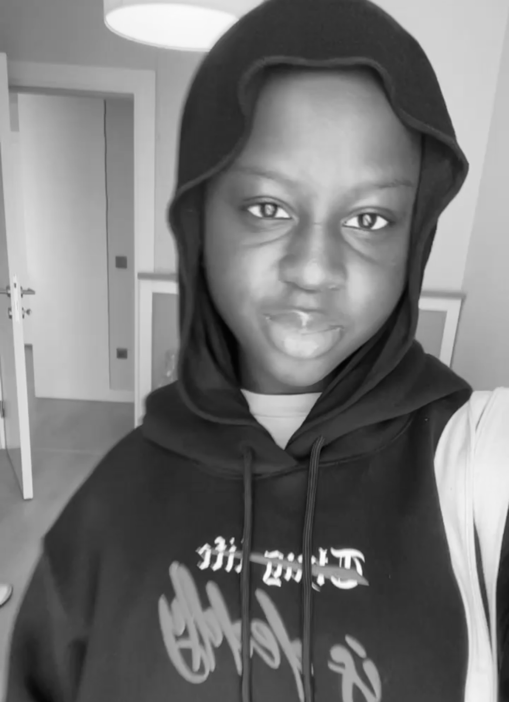

Khadija Dalhat

Summary
complex problem solver with analytical and driven mindset.Dedicated to achieving demanding development objectives.
Education
Feb 2024 Current-Bachelor of science:Software Engineering
Altinbas University,Turkey
Sep 2020-Aug 2023-High school diploma
Alnoor Academy, Abuja
Work Experience
Wildlife conservation volunteer.
10th May 2024-20th May 2024:Zsl Instant Wild
- Asssisted in monitoring and identifying Wildlife species through Zsl instant wild app.
- Contributed to conservation efforts by classifying and tagging Wildlife images.
- Developed strong attenrtion to detail and accuracy in identifying Wildlife species.
- Demonstrated commitment to environmental conservation and Wildlife protection.
Skills
- Organization skills;Time management,multi tasking.
- Communication skills.
- Problem solving skills.
Accomplishments
- Ranked among the the top spotters twice in Zsl wild,showcasing my dedication and keen observation skills in wildlife identification and conservation efforts.
Other Info:
My Hobbies
Contact me